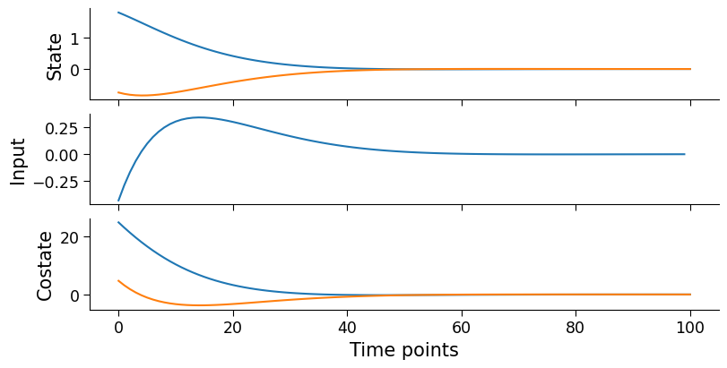

Optimal control of integrator dynamics#
Imports#
[1]:
from typing import Any, Union, NamedTuple, Callable
from functools import partial
import jax
from jax import Array
import jax.random as jr
import jax.numpy as jnp
import matplotlib.pyplot as plt
from diffilqrax.utils import keygen
from diffilqrax.lqr import solve_lqr
from diffilqrax.typs import (
LQR,
LQRParams,
ModelDims
)
PLOT_URL = (
"https://gist.githubusercontent.com/"
"ThomasMullen/e4a6a0abd54ba430adc4ffb8b8675520/"
"raw/1189fbee1d3335284ec5cd7b5d071c3da49ad0f4/"
"figure_style.mplstyle"
)
plt.style.use(PLOT_URL)
jax.config.update('jax_enable_x64', True)
The Problem#
We have simple integrator dynamics, where we want to steer the state to rest with minimal input energy.
\[J_{k}(x_{k}) = \frac{1}{2}Q_{N} ||x_{N}||^{2} +\frac{1}{2} \sum^{N-1}_{i=k} \left(||x_{i}||^{2} + ||u_{i}||^{2} \right)\]
The dynamics of the integrator are defined as,
\[\begin{split}\left(\begin{matrix} p_{k+1} \\ v_{k+1} \end{matrix}\right) =
\left( \begin{matrix} 1 & \delta t \\ 0 & 1 \end{matrix} \right)
\left(\begin{matrix} p_{k+1} \\ v_{k+1} \end{matrix}\right) +
\left(\begin{matrix} \delta t \\ 0 \end{matrix}\right) u_{k}\end{split}\]
[2]:
sys_dims = ModelDims(n=2,m=1,horizon=100, dt=0.1)
Setting up LQR parameters#
The LQRParams class contains parameters that contain the quadratic costs (\(Q\), \(Q_f\) \(R\), \(S\)) and linear costs (\(q\),\(q_f\), \(r\)), the dynamic matrix (\(A\)), the input matrix (\(B\)), the state bias (\(a\)), and the initial state of the system \(x_{0}\).
As this problem solves for finite horizon, the parameters need to span along the length of the horizon, and \(Q\) and \(R\) need to be semi-positive definite (i.e. the diagonal components >= 0).
[3]:
# Define time invariant LQR problem
A = jnp.array([[1., 1.*sys_dims.dt], [0., 1.]])
B = jnp.array([[0.5*sys_dims.dt**2], [sys_dims.dt]])
# B = jnp.array([[0.5*sys_dims.dt**2, 0],
# [sys_dims.dt, 0]])
a = jnp.zeros(sys_dims.n)
Q = jnp.eye(sys_dims.n)
q = jnp.zeros(sys_dims.n)
R = jnp.eye(sys_dims.m)
r = jnp.zeros(sys_dims.m)
S = jnp.zeros((sys_dims.n, sys_dims.m))
Qf = jnp.eye(sys_dims.n)
qf = jnp.zeros(sys_dims.n)
# Span along the horizon
span_mat = partial(jnp.tile, reps=(sys_dims.horizon,1,1))
span_vec = partial(jnp.tile, reps=(sys_dims.horizon,1))
# Define LQR problem through time
lqr_mats = LQR(
A=span_mat(A),
B=span_mat(B),
a=span_vec(a),
Q=span_mat(Q),
q=span_vec(q),
R=span_mat(R),
r=span_vec(r),
S=span_mat(S),
Qf=Qf,
qf=qf
)
lqr_mats?
Signature: lqr_mats()
Type: LQR
String form:
LQR(A=Array([[[1. , 0.1],
[0. , 1. ]],
[[1. , 0.1],
[0. , 1. ]],
<...> loat64), Qf=Array([[1., 0.],
[0., 1.]], dtype=float64), qf=Array([0., 0.], dtype=float64))
Length: 10
File: ~/VSCodeProjects/ilqr_vae_jax/diffilqrax/typs.py
Docstring:
LQR params
Attributes
----------
A : Array
Dynamics matrix.
B : Array
Input matrix.
a : Array
Offset vector.
Q : Array
State cost matrix.
q : Array
State cost vector.
R : Array
Input cost matrix.
r : Array
Input cost vector.
S : Array
Cross term matrix.
Qf : Array
Final state cost matrix.
qf : Array
Final state cost vector.
Call docstring:
Symmetrise quadratic costs.
Returns
-------
LQR
Symmetrised LQR parameters.
[4]:
# define an initial state of the system
key = jr.PRNGKey(seed=0)
k, sk = jr.split(key)
x0 = jr.normal(key, (sys_dims.n,))
# x0 = jnp.array([0., 0.])
print(f"Initial state:\n{x0}")
# Construct the LQR problem
lqr_params = LQRParams(
x0=x0,
lqr=lqr_mats
)
Initial state:
[ 1.81608667 -0.75488484]
Solve LQR problem#
[5]:
opt_traj = solve_lqr(lqr_params)
opt_state, opt_input, opt_costate=opt_traj
[ ]:
fig, axes = plt.subplots(3,1, figsize=(8,4), layout="constrained",sharex=True)
_ = [ax.plot(opt) for ax, opt in zip(axes.flatten(), opt_traj)]
_ = [ax.set_ylabel(n) for ax, n in zip(axes.flatten(), ["State", "Input", "Costate"])]
_ = axes[-1].set_xlabel("Time points")

Validate optimal solution with kkt conditions#
[7]:
from diffilqrax.lqr import kkt
# Validate optimal solution with KKT conditions
kkt_residuals = kkt(lqr_params, *opt_traj)
print(f"< ∂L/x > KKT residuals:\t{jnp.mean(jnp.abs(kkt_residuals[0])):.4}")
print(f"< ∂L/u > KKT residuals:\t{jnp.mean(jnp.abs(kkt_residuals[1])):.4}")
print(f"< ∂L/λ > KKT residuals:\t{jnp.mean(jnp.abs(kkt_residuals[2])):.4}")
< ∂L/x > KKT residuals: 0.0
< ∂L/u > KKT residuals: 1.807e-16
< ∂L/λ > KKT residuals: 2.198e-19